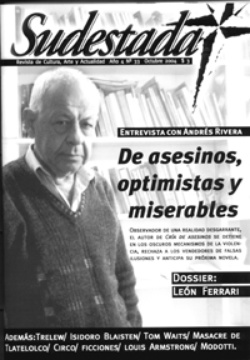

Buscar
Isidoro Blaisten: "El humor no se compra en la farmacia"
Para Isidoro Blaisten (1933-2004), su último libro Voces en la noche, fue mucho más que una primera novela. Fue el desafío de un cuentista de raza por profundizar en sus propias fronteras: el vicio por la precisión, la brevedad, el efecto, lo inesperado.
Edición N° 33
Octubre 2004
Revista bimensual
Comprar edición impresaSumario
- Andrés Rivera: "Es mucho más fácil ser fascista que socialista"
- Sobre la pasión
- Isidoro Blaisten: "El humor no se compra en la farmacia"
- Trelew: La patria fusilada
- ¿La muerte del circo?
- León Ferrari: Devorador de infiernos
- Los muertos
Compartir Articulo
A Blaisten le sorprendía las dimensiones que había tomado su trabajo: "Alcancé las 300 páginas, a veces me parece que es mucho", decía. Esa visión del espacio, era lo único que le permitía asegurar que Voces en la noche -publicado después de nueve años de silencio editorial- pertenecía al género novelístico. "Es la novela de un cuentista" advertía, como si quisiera dejar en claro el origen de ese largo juego: "Terminé la historia casi sin darme cuenta. Todo empezó con un cuentito. Como yo no manejo la computadora, tengo que esperar a que mi mujer pase mis relatos a la máquina. Cuando terminé le pedí a ella que hiciera el trabajo; por distintas razones se demoró en transcribirlo, y yo seguí escribiendo ese cuentito que se transformó en mi primera novela".
Si la casualidad hizo que la historia de un corredor de camisones y otras prendas femeninas preocupado por los destinos de la literatura, creciera día a día; el oficio hizo el resto. Voces en la noche -armado a través de 249 textos- es una suerte de mamuschka rusa, conteniendo infinidad de gestos y formas (la estructura cíclica del cuento, la justeza de micro cuento, la hondura de poesía, el absurdo cotidiano, la reflexión, etc) que Blaisten frecuentó desde su primer libro de poemas Sucedió en la lluvia poemas (1965) hasta el último de relatos: El Acecho (1995).
Como en sus innumerables oficios (corredor de libros, librero, fotógrafo ambulante de plazas porteñas) por la novela de Blaisten pasan sus obsesiones siempre ancladas en el baldío de la mishiadura y poniendo en evidencia una marginalidad que incluye antihéroes, buscavidas, desocupados, seres tragados por la rutina o el destino cambiado, metidos hasta el cuello en un sueño módico o en una empresa disparatada. El viaje emprendido por Blaisten en libros ya clásicos como La Felicidad, El mago, La Salvación, Dublin al sur, o el extraordinario Cerrado por melancolía, siempre se desarrolló entre el humor que "desgarra el velo de la estupidez" y la poesía que "descorre el velo de la belleza".
Novela para agradar y una conversación
"Parece que un escritor no es tal si no escribió novelas. Durante años me preguntaban 'Isidoro ¿para cuándo la novela?' Tanto insistieron que dije ‘acá está'", decía Blaisten en 2001 cuando su novela, en pleno proceso de corrección, llevaba como título tentativo Novela para agradar. En aquel tiempo, sólo corregía: "Lo que la gente ignora es que yo he escrito varias novelas, sólo que después quedaron reducidas a cuentos, ya que fui seleccionado cuidadosamente el material escrito. Generalmente se procede al revés".
Mucho antes, cuando Blaisten oía desde lejos las voces de la muerte que le recitaba haikus como hace la señora Tokoyama en su novela, el narrador se distendía y, como un maestro zen, se dedicaba a conversar sobre literatura. Vaya aquí la trascripción de aquel diálogo, no como homenaje, sí como enseñanza.
¿Por qué la escasa presencia del humor en la narrativa actual?
Ocurre que el humor no se compra en la farmacia, el humorismo es la penúltima etapa de la desesperación, tratar de imponer el humor, es -como dicen los chicos- ‘ser gracioso sin gracia'. Yo nunca pretendí hacer humorismo, incluso a veces me pongo serio y trato de presentar trabajos con cierta seriedad, pero me río de mí mismo, es mi lado personal., totalmente autoreferencial. El ejercicio del humor es una salida desesperada a la realidad del país, porque de otra forma uno se mata. Por otro lado, la gente está muy enferma de solemnidad. Hay que saber reírse de uno mismo, no creerse el centro del mundo. La frase "se la cree" sólo la entendemos los argentinos. Se la creyó, ¿qué es lo que se cree?. Lo más terrible para un escritor es ser víctima de la soberbia. Adolfo Bioy Casares decía que la vanidad traía mala suerte. Ése es el lema de mi vida.
Su obra cuentística se ubica entre su primer libro que fue de poesía ("Sucedió en la lluvia") y ahora esta novela. ¿Cómo se dieron esos cambios?
Como dijo Faulkner cuando le entregaron el Nobel: ‘escribo novelas por la imposibilidad de escribir cuentos y escribo cuentos por la imposibilidad de escribir poesía, sigo escribiendo'. Soy un gran lector de poesía y sigo escribiendo poesía que nunca publicaré por razones personales. Mi curiosidad es tal, que a veces busco en las librerías los libros de autores jóvenes poco conocidos.
¿Cómo se fue transformando su visión de la literatura?
El gran poeta Nazim Hikmet escribió ‘sin jactarme querida pasé como una bala estos diez años de encarcelamiento pues guardo como entonces, salvo este mal al hígado, el mismo corazón y el mismo pensamiento'. Creo tener el mismo corazón y el mismo pensamiento que cuando tenía 20 años. Sigo cometiendo los mismos errores. Envejecí sin crecer.
¿Cuáles son los disparadores que originan sus historias?
No tengo un método establecido para escribir. Así como no hay un impresión digital igual a la otra, no hay disparadores de un relato que se asemeje a otro; intervienen muchos factores que escapan a la lógica. Yo mismo tengo una historia sobre mi relato Victorcito el hombre oblicuo. Yo fotografiaba niños en las plazas y visitaba sus domicilios para venderlas. Muchas no se vendían, pero una tarde me las compraron todas; la plata equivalía a un mes de pago en la pensión donde vivía. Esa tarde regresé muy confuso y difuso, y en lugar de apretar el botón del ascensor de la pensión, toqué el timbre en una casa. Con la puerta entornada, una mucama me preguntó a quién buscaba. Yo la miré y no pude decir palabra. De aquí salió Victorcito, el hombre obliquo. Todo esto para decir que no hay una explicación que justifique el ejercicio de la creación. Hay motivos del corazón que la razón no entiende y motivos de la creación que la razón ignora. Si estuvieran establecidos los factores que determinan la creación, los críticos deberían ser los grandes cuentistas y eso, gracias a Dios, nunca sucedió.
Comentarios
Lautaro Ortíz
Articulos más vistos


LIBRERÍA SUDESTADA

Colección infantil

Distribuidora de Libros

Suscripción

Sudestada en URUGUAY

Otros articulos de esta edición
 Nota de tapa
Nota de tapa
Andrés Rivera: "Es mucho más fácil ser fascista que socialista"
Un país desgarrado por un pasado sangriento, engendra nuevos asesinos. Los educa en la miseria, los prepara en las comisarías, ...
 En la calle
En la calle
¿La muerte del circo?
El circo como manifestación popular no escapa a la crisis y se ve perjudicado por la arremetida de grupos ecologistas ...
 Dossier
Dossier
León Ferrari: Devorador de infiernos
Conversaciones con el artista conceptual que supo vincular arte, ideología y política en su obra, y que desató una polémica ...
Trelew: La patria fusilada
Se estrenó Trelew, el documental de Mariana Arruti sobre la fuga carcelaria y los fusilamientos políticos de 1972.
 Ficciones
Ficciones